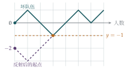

STEP I 2011，第 12 题
继续之前，请先阅读题目（原题为英文）。题目载于 STEP Support Programme 的题目资料库： step.maths.org/questions/11-s1-q12
引子
这个规律实在叫人难以抗拒：\(\frac{m}{m+1}\)、\(\frac{m-1}{m+1}\)、\(\frac{m-2}{m+1}\)。若有 \(n\) 个人拿着 £2 硬币，答案想必就是 \(\frac{m - n + 1}{m + 1}\)。事实正是如此，而最巧妙的证明（proof）用上了组合数学（combinatorics）中数一数二优雅的想法：反射原理（reflection principle）。它把图形的一部分沿一条直线反射，从而将一个困难的计数问题（从不缺零钱找赎的队伍有多少种）变成一个容易的计数问题。
同一个问题有许多不同的面貌：点票过程中胜出者从未落后的选举（1887 年的伯特兰投票问题（Bertrand’s ballot problem））、永不破产的赌徒、正确配对的括号。当 \(m = n\) 时，数出来的就是卡塔兰数（Catalan numbers），这大概是组合数学中除二项式系数（binomial coefficients）以外最常出现的数列（sequence）。
动笔之前
每位拿 £1 的顾客会给你一枚硬币；每位拿 £2 的顾客会取走一枚（作为找赎）。你甚么时候会无法继续？
留意你手上 £1 硬币的数目。每来一位 £1 顾客，数目加 \(1\)；每来一位 £2 顾客，数目减 \(1\)。你无法继续的情况，恰好就是一位 £2 顾客来到而你手上没有硬币：数目会变成 \(-1\)。所以你能成功，当且仅当（if and only if）在队伍中的每一刻，到目前为止的 £1 顾客人数都不少于到目前为止的 £2 顾客人数。
逐步解题
阶段 1 一枚 £2 硬币
当 \(n = 1\) 时，只有 £2 顾客排第一才会失败。£2 顾客排在 \(m + 1\) 个位置中任何一个的可能性均等，所以 \[\mathrm{P}(\text{成功}) = 1 - \frac{1}{m + 1} = \frac{m}{m + 1}. \qed\]
阶段 2 两枚 £2 硬币
第一个人必须拿着 £1 硬币。第二个人可以出现甚么情况？在每种情况下，你余下面对的是甚么局面？
第一个人拿着 £1 硬币的概率（probability）是 \(\frac{m}{m+2}\)；否则你立即失败。这时你手上有一枚硬币，而余下的队伍有 \(m - 1\) 个 £1 的人和两个 £2 的人。
若第二个人拿着 £1 硬币（概率为 \(\frac{m-1}{m+1}\)），你手上便有两枚硬币，无论两枚 £2 硬币何时出现都足够找赎。成功是必然的。
若第二个人拿着 £2 硬币（概率为 \(\frac{2}{m+1}\)），你手上又变回没有硬币，余下 \(m - 1\) 个 £1 的人和一个 £2 的人。根据第 (i) 部分，以 \(m - 1\) 代替 \(m\)，你成功的概率是 \(\frac{m-1}{m}\)。
所以 \[\mathrm{P}(\text{成功}) = \frac{m}{m + 2}\Bigl(\frac{m - 1}{m + 1} + \frac{2}{m + 1}\cdot\frac{m - 1}{m}\Bigr) = \frac{m}{m + 2}\cdot\frac{m - 1}{m + 1}\cdot\frac{m + 2}{m} = \frac{m - 1}{m + 1}. \qed\]
试用同样的方法处理 \(n = 3\)。这是行得通的，但情况会愈分愈多。有没有方法可以一次过数出所有成功的队伍？
阶段 3 把队伍看成路径
以你手上的硬币数目对已服务的人数作图。一条队伍看起来是甚么样子？一条成功的队伍又是甚么样子？
一条队伍就是一条路径，由 \(m\) 步上升（£1）和 \(n\) 步下降（£2）组成，从高度 \(0\) 出发，终于高度 \(m - n\)。这样的路径共有 \(\binom{m + n}{n}\) 条，每条出现的可能性均等。一条队伍成功，恰好就是它的路径从不低于 \(0\)。所以我们需要数出坏路径，即那些触及高度 \(-1\) 的路径。
阶段 4 反射
取一条坏路径。找出它第一次触及 \(-1\) 的时刻，把路径在这一刻之前的部分沿直线 \(y = -1\) 反射。新的路径从哪里开始，又在哪里结束？
反射后的路径从 \(-2\) 出发（即 \(0\) 对直线 \(y = -1\) 的镜像），终点与原来的路径相同，即 \(m - n\)（图 9.10.1）。反过来说，每条由 \(-2\) 到 \(m - n\) 的路径都必定在某处穿过 \(y = -1\)（因为 \(m \geq n\)，它起点在这条线之下，终点在这条线之上）；把它第一次到达这条线之前的部分反射，便得回一条由 \(0\) 出发的坏路径。所以由 \(0\) 出发的坏路径，与由 \(-2\) 到 \(m - n\) 的所有路径恰好一一对应。
一条以 \(m + n\) 步由 \(-2\) 走到 \(m - n\) 的路径共上升了 \(m - n + 2\)，所以它有 \(m + 1\) 步上升和 \(n - 1\) 步下降：这样的路径有 \(\binom{m + n}{n - 1}\) 条。因此 \[\mathrm{P}(\text{失败}) = \frac{\binom{m + n}{n - 1}}{\binom{m + n}{n}} = \frac{n!\,m!}{(n - 1)!\,(m + 1)!} = \frac{n}{m + 1},\] 而 \[\mathrm{P}(\text{成功}) = 1 - \frac{n}{m + 1} = \frac{m - n + 1}{m + 1}.\] 当 \(n = 3\) 时，这就是 \(\frac{m - 2}{m + 1}\)。■

回顾
找出合适的状态。唯一要紧的是手上硬币的数目，这把队伍变成了一次游走。
以最初几步为条件。第 (i) 和第 (ii) 部分的做法，是考虑最初几个人的情况，从而化约为较小的情形。
用双射（bijection）数出补集。坏路径难以直接数出，但反射把它们与一个容易数算的集合配对起来。
背后的数学
卡塔兰数
当 \(m = n\)（£1 硬币刚好足够）时，成功队伍的数目是 \[\binom{2n}{n} - \binom{2n}{n - 1} = \frac{1}{n + 1}\binom{2n}{n},\] 即第 \(n\) 个卡塔兰数 \(C_n\)：\(1, 1, 2, 5, 14, 42, 132, \ldots\)。Richard Stanley 的著作 Catalan Numbers 列出了超过二百种由卡塔兰数计算数目的事物。其中包括：把 \(n\) 对括号正确排列的方法数目（“\((())()\)”是允许的，“\(())(()\)”则不允许，理由正是上述的硬币论证，只要把“\((\)”看成 £1、“\()\)”看成 £2）、用互不相交的对角线把一个 \(n + 2\) 边形分割成三角形的方法数目，以及为 \(n + 1\) 个因子的乘积加上括号的方法数目。
随机游走
队伍就是随机游走（random walk），而反射原理是研究随机游走的基本工具之一。举例说，它可以证明由 \(0\) 出发的公平随机游走必定终会返回 \(0\)，也可以证明它在最初 \(2n\) 步一直保持严格为正的概率是 \(\frac{1}{2}\binom{2n}{n}2^{-2n} \approx \frac{1}{2\sqrt{\pi n}}\)。在连续的形式下，把同样的反射论证应用于布朗运动（Brownian motion），便可得出其最大值的分布（distribution）。这是某些金融期权定价的基础，这类期权的回报取决于股价有否越过某个界限。
1887 年，约瑟夫·伯特兰（Joseph Bertrand）提出：在一场选举中，候选人 \(A\) 得 \(a\) 票，\(B\) 得 \(b < a\) 票，那么 \(A\) 在整个点票过程中一直严格领先的概率是多少？答案是 \(\frac{a - b}{a + b}\)，同年由 Désiré André 证明，他的论证通常被视为反射原理（不过历史学家指出，André 实际的证明用的是一个稍有不同的双射）。我们的抽奖券问题是一个容许平手的变体：成功的意思是 £1 的数目从不低于 £2 的数目。其中一道练习会由我们的答案推导出伯特兰的答案。
思维技巧
要数算一个集合，就找出它与一个你懂得数算的集合之间的一一对应（one-to-one correspondence）。
反射把坏队伍与由另一个起点出发、不受限制的路径配对起来。双射是组合数学中最令人满足的证明，因为它们解释了两个数为何相等，而不只是证明它们相等。在大学里，你会在组合数学中处处遇到双射证明，也会在研究随机游走和布朗运动时再次遇上反射原理。
延伸练习
分情况处理三枚。仿照第 (ii) 部分，以队伍中最初几个人为条件来证明第 (iii) 部分，看看反射原理省却了多少工夫。
伯特兰投票问题。在一场选举中，\(A\) 得 \(a\) 票，\(B\) 得 \(b < a\) 票。证明 \(A\) 在整个点票过程中一直严格领先的概率是 \(\frac{a - b}{a + b}\)。（提示：第一票必须投给 \(A\)；此后，\(A\) 落后于 \(B\) 的票数绝不可多于…。）
括号。列出三对括号的 \(5\) 种正确排列，以及把五边形分割成三角形的 \(5\) 种方法。你能找出两者之间的一个双射吗？
一张 £5 纸币。一条队伍中有 \(m\) 个人拿着 £1 硬币，\(n\) 个人拿着 £5 纸币，而一张票的价钱是 £1。解释为何反射原理不再给出简单的答案。（这个推广困难得多。）
延伸阅读
William Feller, An Introduction to Probability Theory and Its Applications, Vol. 1（Wiley），第 III 章。有关随机游走和反射原理的经典论述。
Richard Stanley, Catalan Numbers（Cambridge University Press）。超过二百种诠释，并附练习。
Marc Renault, “Lost (and found) in translation: André’s actual method and its application to the generalized ballot problem”，American Mathematical Monthly 115 (2008)。反射原理的历史。